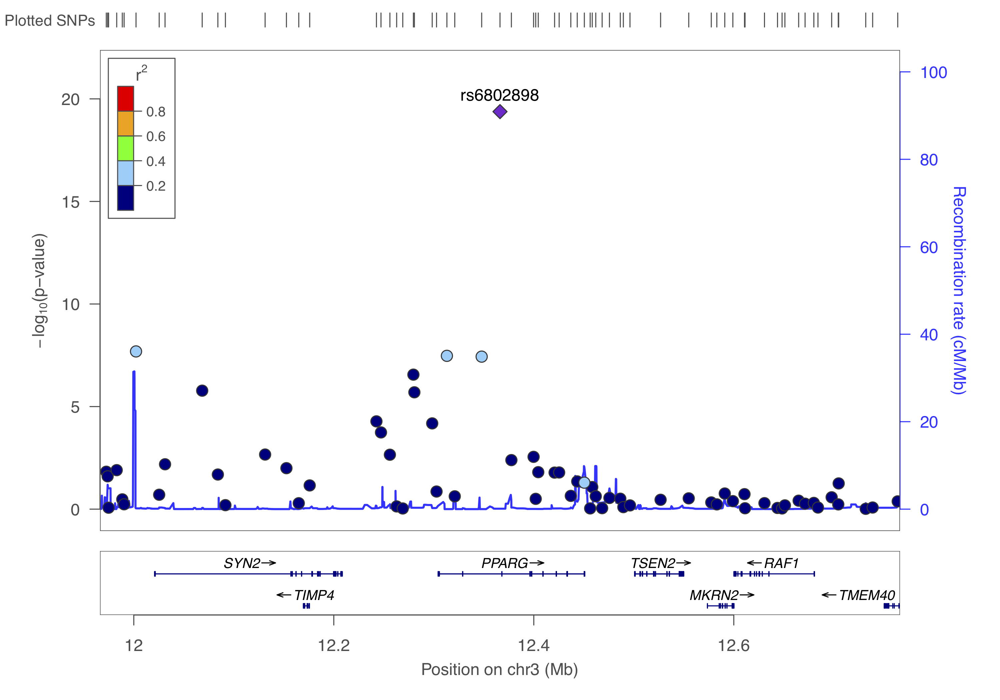
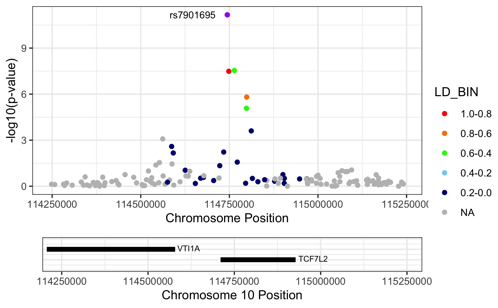
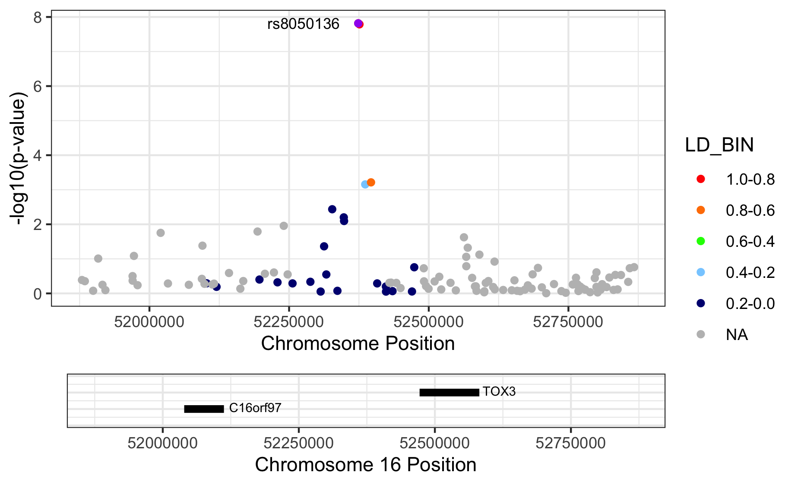
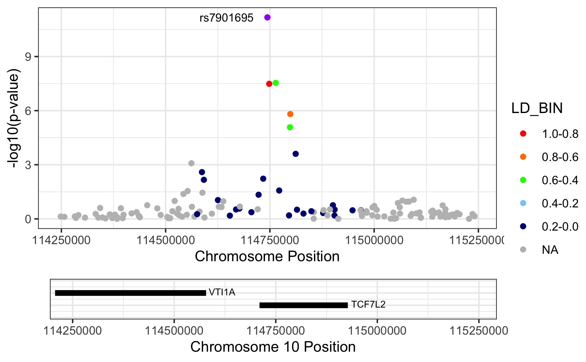
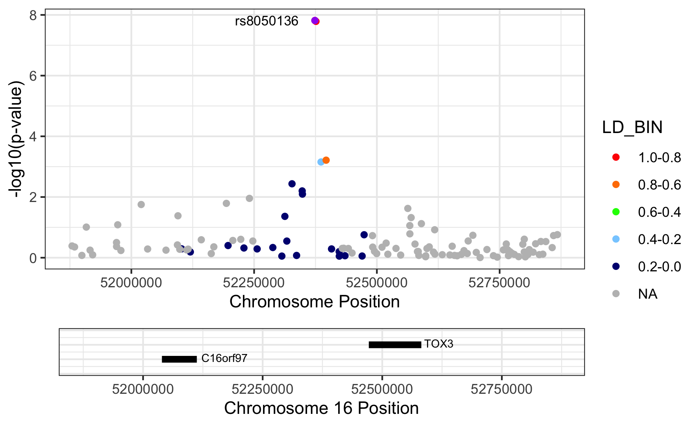

11 Regional association plots
Now that you have created a cleaned GWAS result, and created a diagnostic QQ plot and a traditional Manhattan, we should want to inspect the top hits a bit more closer. To do this, we needneed to find the independent hits by clumping the results. We will just use the defaults, but please take a note of all the options here https://www.cog-genomics.org/plink/1.9/postproc#clump.
plink --bfile ~/data/shared/gwas/gwa --clump dummy_project/data.assoc.logistic --clump-p1 5e-8 --clump-p2 0.05 --clump-kb 500 --clump-r2 0.05 --clump-verbose --out dummy_project/data.assoc.logisticNow you will have a list of all the independent SNPs, i.e. the genetic loci, that are associated to the trait.
cat dummy_project/data.assoc.logistic.clumped##
## CHR F SNP BP P TOTAL NSIG S05 S01 S001 S0001
## 3 1 rs6802898 12366207 4.18e-20 50 35 4 2 1 8
##
## KB RSQ ALLELES F P
## (INDEX) rs6802898 0 1.000 T 1 4.18e-20
##
## rs305500 -400 0.0588 TC/CA 1 0.0476
## rs420014 -394 0.0552 TA/CG 1 0.015
## rs305494 -392 0.0681 TG/CA 1 0.025
## rs438129 -383 0.0721 TT/CC 1 0.0126
## rs7615580 -364 0.309 TC/CT 1 2.05e-08
## rs307560 -298 0.153 TT/CC 1 1.68e-06
## rs11720130 -235 0.0838 TA/CG 1 0.00218
## rs7616006 -124 0.0831 TA/CG 1 5.25e-05
## rs6775191 -119 0.0506 TG/CA 1 0.000182
## rs167466 -110 0.0523 TT/CC 1 0.00222
## rs12635120 -86.6 0.332 TG/CA 1 2.77e-07
## rs6798713 -85.6 0.288 TC/CT 1 2.01e-06
## rs2920500 -67.8 0.102 TA/CG 1 6.59e-05
## rs6768587 -53.1 0.295 TG/CA 1 3.36e-08
## rs2028760 -18.3 0.305 TA/CG 1 3.67e-08
##
## RANGE: chr3:11966007..12366207
## SPAN: 400kb
##
## ------------------------------------------------------------------
##
##
## CHR F SNP BP P TOTAL NSIG S05 S01 S001 S0001
## 10 1 rs7901695 114744078 6.78e-12 32 24 2 1 1 4
##
## KB RSQ ALLELES F P
## (INDEX) rs7901695 0 1.000 C 1 6.78e-12
##
## rs7917983 -21.2 0.0589 CC/TT 1 0.046
## rs7895307 -10.1 0.0819 CG/TA 1 0.00592
## rs7903146 4.26 0.784 CT/TC 1 3.25e-08
## rs7904519 19.8 0.582 CG/TA 1 2.89e-08
## rs11196192 28.2 0.162 CG/TT 1 0.0268
## rs10885409 54 0.502 CC/TT 1 8.35e-06
## rs12255372 54.8 0.624 CT/TG 1 1.55e-06
## rs4918789 67.7 0.24 CG/TT 1 0.000248
##
## RANGE: chr10:114722872..114811797
## SPAN: 88kb
##
## ------------------------------------------------------------------
##
##
## CHR F SNP BP P TOTAL NSIG S05 S01 S001 S0001
## 16 1 rs8050136 52373776 1.52e-08 23 16 1 3 2 1
##
## KB RSQ ALLELES F P
## (INDEX) rs8050136 0 1.000 A 1 1.52e-08
##
## rs7205986 -61.1 0.226 AG/CA 1 0.0434
## rs6499640 -46.6 0.258 AA/CG 1 0.00367
## rs1861868 -25.9 0.15 AT/CC 1 0.0063
## rs1075440 -25.4 0.162 AA/CG 1 0.00802
## rs3751812 2.18 0.994 AT/CG 1 1.63e-08
## rs7190492 12.5 0.258 AG/CA 1 0.0007
## rs8044769 22.9 0.524 AC/CT 1 0.000611
##
## RANGE: chr16:52312647..52396636
## SPAN: 83kb
##
## ------------------------------------------------------------------Question: How many independent hits did you find?
In summary, clumping identifies three loci and now that you know them you can create regional association plots.
11.1 LocusZoom
Now you are ready to visualize regions of interest using a package like LocusZoom. Locuszoom is a great and easy tool, you’ll soon discover. It’s the fast and lazy way to get regional association plots.
First, let’s get what we need (SNP and P) and gzip the results.
echo "SNP P" > dummy_project/data.assoc.logistic.locuszoom
cat dummy_project/data.assoc.logistic | awk '$5=="ADD"' | awk '{ print $2, $9 }' >> dummy_project/data.assoc.logistic.locuszoom
gzip -v dummy_project/data.assoc.logistic.locuszoomYou can to upload this data.assoc.logistic.locuszoom.gz Try to visualize each locus using the information above and by following the instructions. Choose HapMap 2, hg18, CEU as the LD-reference.
You should get something like below.



11.2 RACER
An alternative to create regional association plots for each of these loci is using RACER. This packages offers substantial flexibility, and quite frankly, code-wise is easier to edit - think colorscheme, background etc. - as it is based on ggplot2. The creator, Olivia Sabik, also wrote a nice vignette with excellent instructions.
Using RACER is also a step-up to colocalization about which you read a bit more in chapter @ref(post_gwas).
Right, so from the above we identified three independent hits: rs6802898, rs7901695, rs8050136. Let’s put them in a dataset with their chromosome and basepair position and create a list.
rsID <- c("rs6802898", "rs7901695", "rs8050136")
CHR <- as.integer(c(3, 10, 16))
BP <- as.integer(c(12366207, 114744078, 52373776))
# BPend <- c(12366207 + 500000, 114744078 + 500000, 52373776 + 500000)
variant_list <- data.frame(rsID, CHR, BP)## rsID CHR BP
## 1 rs6802898 3 12366207
## 2 rs7901695 10 114744078
## 3 rs8050136 16 52373776## [1] "rs6802898" "rs7901695" "rs8050136"We can now take the filtered and prepared GWAS summary statistics, i.e. gwas_assoc_compl you created earlier in chapter @ref(gwas_visuals), to draw three nice regional association plots around these variants.
This file should contain the following:
tibble [306,102 × 14] (S3: tbl_df/tbl/data.frame)
$ SNP : chr [1:306102] "rs10000010" "rs10000023" "rs10000030" "rs1000007" ...
$ CHR : int [1:306102] 4 4 4 2 4 4 16 4 2 4 ...
$ BP : int [1:306102] 21227772 95952929 103593179 237416793 21504615 157793485 24325037 33810744 235355721 77575270 ...
$ A1 : chr [1:306102] "C" "T" "A" "C" ...
$ A2 : chr [1:306102] "T" "G" "G" "T" ...
$ MAF : num [1:306102] 0.426 0.484 0.162 0.312 0.343 ...
$ callrate: num [1:306102] 0.999 0.989 0.998 1 0.991 ...
$ NMISS : int [1:306102] 3996 3957 3991 4000 3963 3919 3899 3931 3927 3941 ...
$ NCHROBS : int [1:306102] 7992 7914 7982 8000 7926 7838 7798 7862 7854 7882 ...
$ BETA : num [1:306102] 0.04114 -0.00985 -0.02235 0.01784 -0.07904 ...
$ SE : num [1:306102] 0.0457 0.0456 0.0605 0.0489 0.0471 ...
$ OR : num [1:306102] 1.042 0.99 0.978 1.018 0.924 ...
$ STAT : num [1:306102] 0.901 -0.216 -0.37 0.365 -1.677 ...
$ P : num [1:306102] 0.3676 0.829 0.7117 0.7152 0.0935 ...
- attr(*, ".internal.selfref")=<externalptr>
- attr(*, "sorted")= chr "SNP"We could limit ourselves by limiting the region to plot by the clump-size (see above), but generally it’s fine to just ‘take the top variant ± 500kb’.
library(RACER)
RANGE=500000
for(VARIANT in variants_of_interest){
cat(paste0("Getting data for ", VARIANT,".\n"))
tempCHR <- subset(variant_list, rsID == VARIANT)[,2]
tempSTART <- subset(variant_list, rsID == VARIANT)[,3] - RANGE
tempEND <- subset(variant_list, rsID == VARIANT)[,3] + RANGE
tempVARIANTnr <- subset(variant_list, rsID == VARIANT)[,1]
cat("\nSubset required data.\n")
temp <- subset(gwas_assoc_compl,
CHR == tempCHR & (BP >= tempSTART & BP <= tempEND))
cat("\nFormatting association data.\n")
# make sure you have the right column numbers here!
temp_f = RACER::formatRACER(assoc_data = temp, chr_col = 2, pos_col = 3, p_col = 14)
cat("\nGetting LD data.\n")
temp_f_ld = RACER::ldRACER(assoc_data = temp_f, rs_col = 1, pops = "EUR", lead_snp = VARIANT)
cat(paste0("\nPlotting region surrounding ", VARIANT," on ",tempCHR,":",tempSTART,"-",tempEND,".\n"))
# source(paste0(PROJECT_loc, "/scripts/functions.R"))
p1 <- singlePlotRACER(assoc_data = temp_f_ld,
chr = tempCHR, build = "hg19",
plotby = "snp", snp_plot = VARIANT,
label_lead = TRUE)
print(p1)
cat(paste0("Saving image for ", VARIANT,".\n"))
ggsave(filename = paste0(COURSE_loc, "/dummy_project/", tempVARIANTnr, ".",VARIANT,".regional_assoc.png"), plot = p1)
# ggsave(filename = paste0(COURSE_loc, "/dummy_project/", tempVARIANTnr, ".",VARIANT,".regional_assoc.pdf"), plot = p1)
# ggsave(filename = paste0(COURSE_loc, "/dummy_project/", tempVARIANTnr, ".",VARIANT,".regional_assoc.eps"), plot = p1)
rm(temp, p1,
temp_f, temp_f_ld,
tempCHR, tempSTART, tempEND,
VARIANT, tempVARIANTnr)
} 

Figure 11.1: Regional association plots.
Please note that we are letting RACER plot the variants on genome build 37 (hg19), but we actually provide hg18-based chromosome and basepair positions. The proper thing to do is to liftOver our coordinates to match those in hg19. Here we didn’t, because I just wanted to show you the ‘how it’s done’.
11.3 Stop playing around
Alright. It’s time to stop playing around and do a quick recap of what you’ve learned.
- You learned how to convert datasets.
- You learned how to execute sample QC and create diagnostic graphics
- You learned how to do the same for SNP QC
- You learned how to execute an association study given a dataset, covariates, and different assumptions regarding the genetic model.
- You learned how to visualize results and played around with different visuals.
You should be ready for the real stuff. And if not, the next chapter will help you get ready: Chapter 12